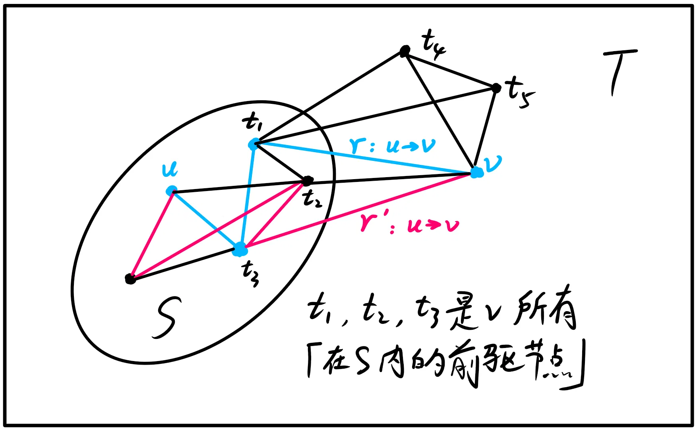
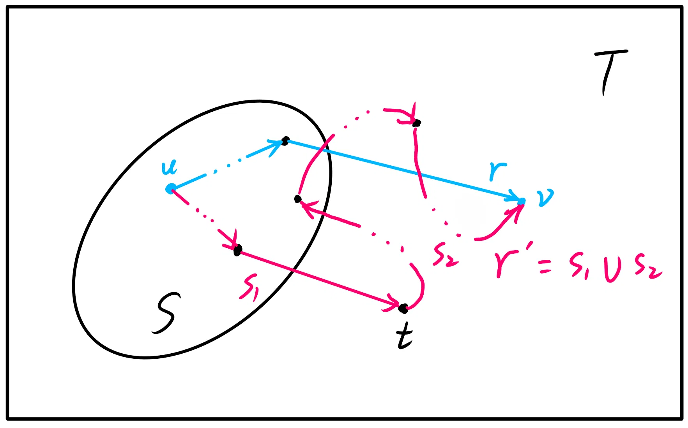

# Dijkstra 算法正确性的证明
# 问题
给定一个非负权边的图，规定起点为u，求从u 出发到每一个节点的最短路径．（求解非负权图上单源最短路径）
# 流程简述
将结点分成两个集合：已确定最短路长度的点集（记为S 集合）的和未确定最短路长度的点集（记为T 集合）．
一开始所有的点都属于T 集合，dis(s)=0，其他点的dis 均为+∞．
然后重复这些操作：
- 从T 集合中，选取一个最短路长度最小的结点，移到S 集合中；
- 对那些刚刚被加入S 集合的结点的所有在T 内的邻接点更新dis．
直到T 集合为空，算法结束．
# 正确性证明
显然，Dijkstra 算法的正确性取决于命题「每当一个结点v 加入S 集合时，此时dis(v) 对应的路径r:u→v 的长必为全局最短路径长D(v)」的真伪．
（反证法）假设存在另一条路径r′:u→v 为全局最短路径，即
D(v)<dis(v)
有一个非常重要的点：r′ 的结点中除了终点v∈T，必然存在另一点t∈T．
证明：（反证法）假设r′ 是只有终点v 在T 内的路径．
根据操作 2，此时dis(v) 已经被v 的所有在S 内的前驱结点更新（不单只是v，T 内所有的结点也被所有相应的前驱结点更新），对应的路径r 已经是所有只有终点v 在T 内的路径u→v 中最短的一条路径，因此不存在另一条只有终点v 在T 内的路径r′，使得r′ 的路径长∣r′∣ 比r 的路径长∣r∣ 短，与假设矛盾．
故r′ 的结点中除了终点v∈T，必然存在另一点t∈T．

因此不妨设路径r′ 中第一个在T 内的结点为t．

对于从T 中通过 Dijkstra 算法选出来的结点v，有另一个非常重要的点：所有在T 内的结点中，dis(v) 最小．因此
dis(t)≥dis(v)
在全局最短路径r′ 中，设局部路径
s1:u→ts2:t→v
根据操作 2，此时dis(t) 已经被t 的所有在S 内的前驱结点更新，因此dis(t) 对应的路径已经是只有终点t 在T 内的最短路径．因为s1⊆r′，所以s1 必为u→t 的全局最短路径，又因为s1 是只有终点t 在T 内的路径，故s1 也为只有终点t 在T 内的最短路径，因此有
D(t)=dis(t)
在非负权图中，有
∣s2∣≥0
根据假设（路径r′:u→t→v 为全局最短路径），有
D(v)=D(t)+∣s2∣=dis(t)+∣s2∣≥dis(t)≥dis(v)>D(v)
这显然不成立，原命题得证．